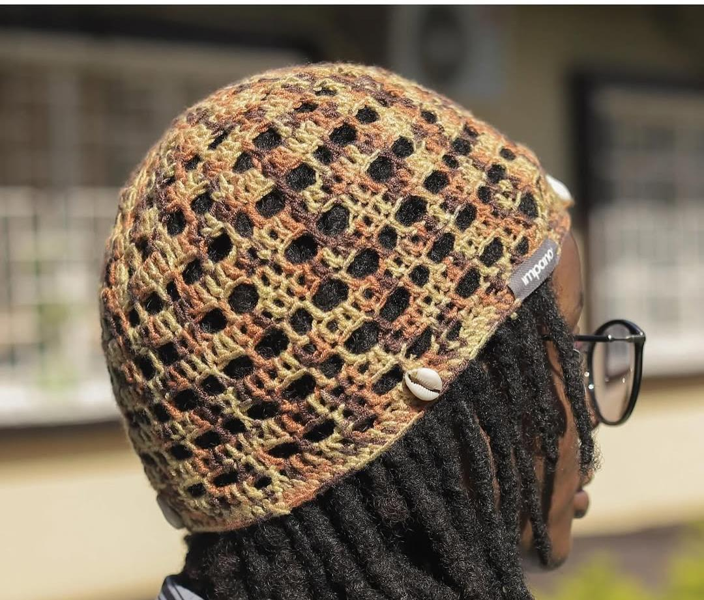

Le savoir
Que disent
les cauris ?
Avant l’ère des billets et des pièces, le cauri servait de monnaie d’échange dans plusieurs régions du monde. En Afrique subsaharienne, il est rarement resté un simple objet de valeur.
- Prospérité & richesse matérielle
- Fertilité & féminité
- Protection contre le mauvais œil
